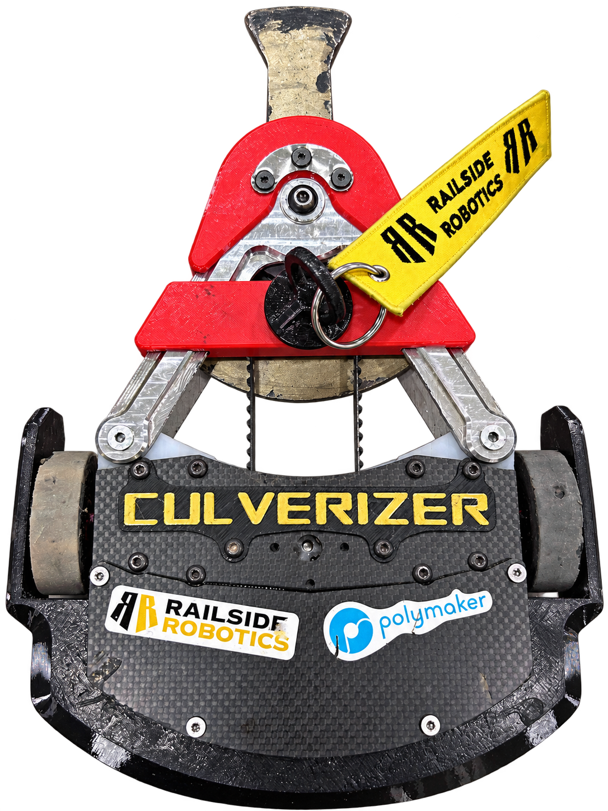
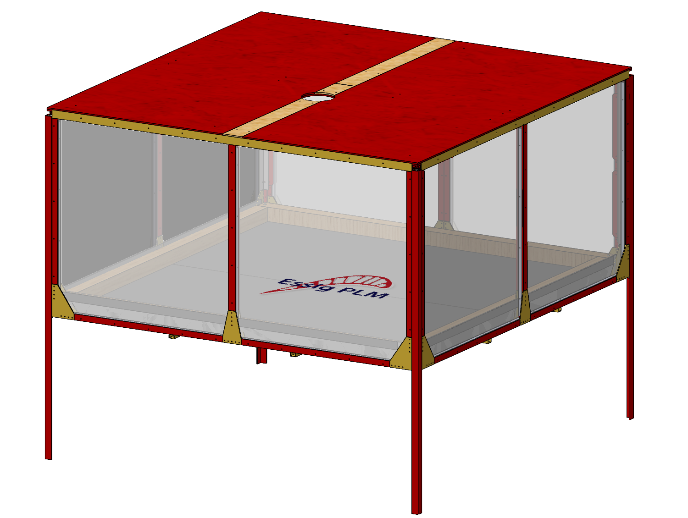
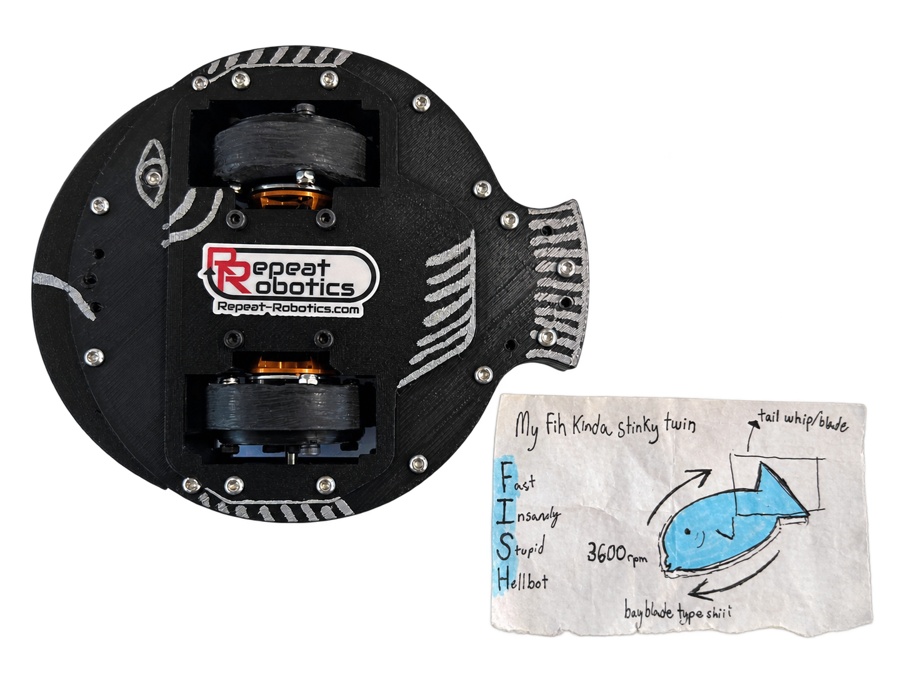

Manan Singh · Engineering Portfolio
Robots from CAD to competition.
I study Robotics and Computer Science at Purdue University. I design, build, and compete with combat robots.
Explore projects Download portfolio
CulverizerSelected Projects
01
Culverizer
A compact combat robot built around a heavy horizontal blade, a rigid carbon-fiber chassis, and impact-absorbing TPU armor.

02Beetleweight Arena
A transportable combat robotics arena designed for rapid assembly, replaceable wear components, and visibility from every side.

03FIH
A manually controlled melty-brain plastic antweight developed by a two-person team during a 48-hour Buildathon.